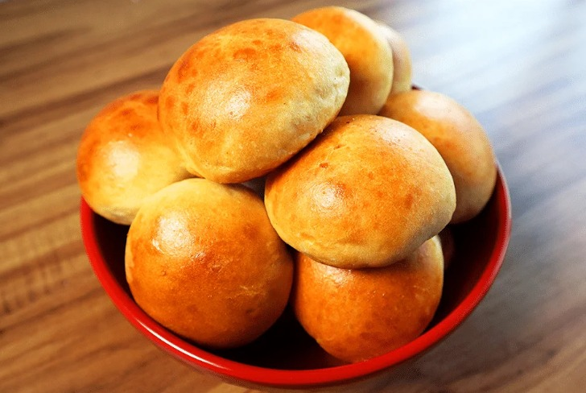

.....
Pão de Batata Doce
Como fazer o seu Pão de Batata Doce?
O Pão de Batata Doce é uma delícia que combina a suavidade da batata doce com a textura macia do pão. Com um toque de doçura e aroma irresistível, esse pão é uma opção versátil que pode ser apreciada no café da manhã, lanche da tarde ou em diversas ocasiões especiais.
Ingredientes
Esse Pão de Batata Doce é perfeito para diversas ocasiões, desde um café da manhã acolhedor até um acompanhamento especial para um chá da tarde. A doçura sutil da batata doce torna-o uma escolha excelente para eventos festivos ou refeições em família.
Benefícios
Conhecida por sua polpa doce e coloração vibrante, a batata-doce oferece uma riqueza de nutrientes, incluindo vitaminas A, C e potássio. Sua capacidade de regular os níveis de açúcar no sangue, graças à presença de fibras, a torna benéfica para diabéticos e para a estabilização dos níveis de glicose.
Além disso, sua abundância em fibras promove a saúde digestiva, enquanto a vitamina A presente na batata-doce contribui para a saúde dos olhos, além de proteger a pele contra danos dos radicais livres.
Modo de Preparo
-
Reuna os Ingredientes
Em uma tigela grande, misture todos os ingredientes até formar uma massa homogênea.
Passo 1
-
Sove a massa
Sove a massa vigorosamente. Quanto mais sovar, melhor será a consistência do pão.
Passo 2
-
Divida a massa
Divida a massa em duas partes e molde dois pães.
Passo 3
-
Coloque os pães
Coloque os pães em uma forma untada.
Passo 4
-
Deixe a massa crescer
Deixe a massa crescer até dobrar de volume, o que geralmente leva cerca de 1 hora, dependendo das condições climáticas.
Passo 5
-
Pré-aqueça o forno
Pré-aqueça o forno a 180º C.
Passo 6
-
Asse os pães
Asse os pães por aproximadamente 35 minutos ou até que fiquem dourados e cozidos por dentro.
Passo 7
-
Retire do forno
Retire do forno e deixe esfriar antes de servir.
Passo 8
-
Aproveite
Sirva o Pão de Batata Doce fatiado e aproveite!
Passo 9
Passo a passo
Passo 1
Em uma tigela grande, misture todos os ingredientes até formar uma massa homogênea.
Passo 2
Sove a massa vigorosamente. Quanto mais sovar, melhor será a consistência do pão.
Passo 3
Divida a massa em duas partes e molde dois pães.
Passo 4
Coloque os pães em uma forma untada.
Passo 5
Deixe a massa crescer até dobrar de volume, o que geralmente leva cerca de 1 hora, dependendo das condições climáticas.
Passo 6
Pré-aqueça o forno a 180º C.
Passo 7
Asse os pães por aproximadamente 35 minutos ou até que fiquem dourados e cozidos por dentro.
Passo 8
Retire do forno e deixe esfriar antes de servir.
Passo 9
Sirva o Pão de Batata Doce fatiado e aproveite!